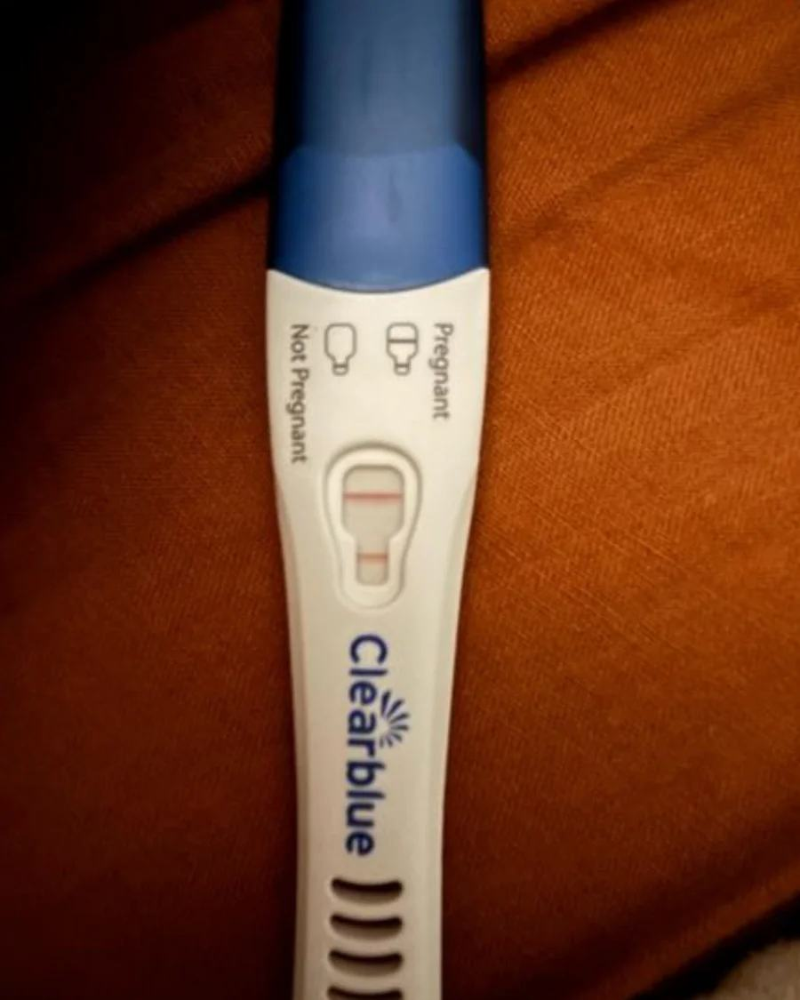
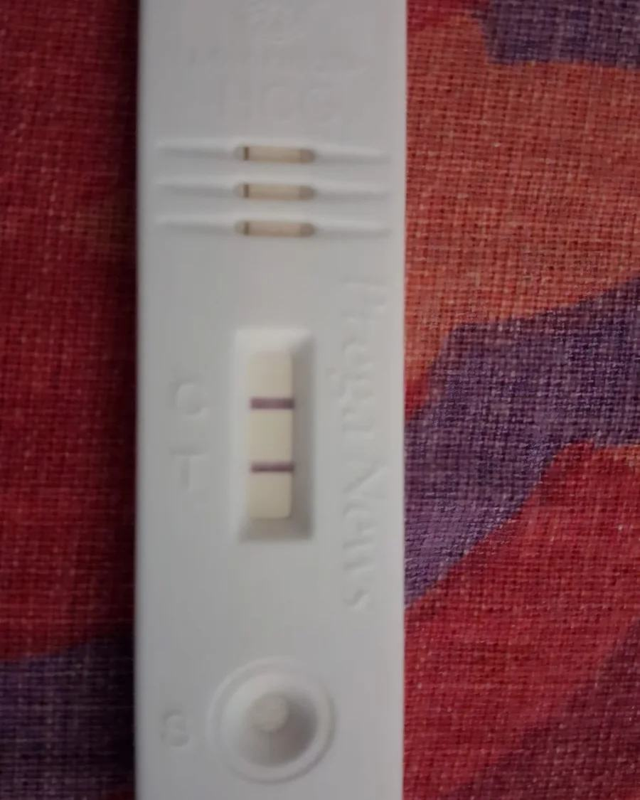
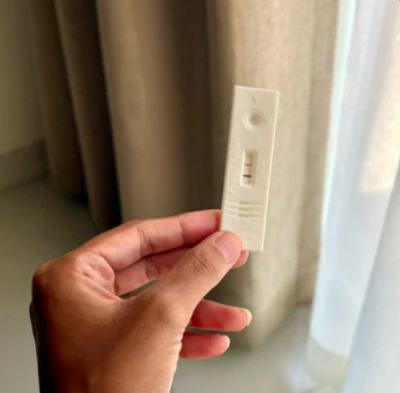
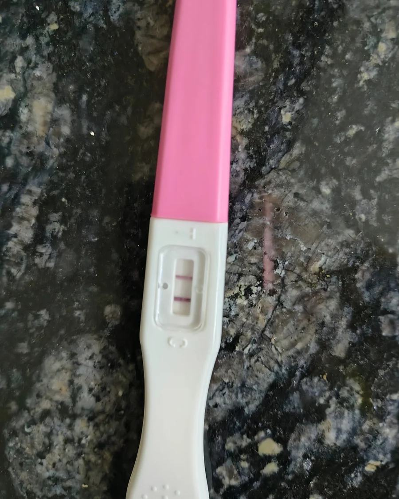
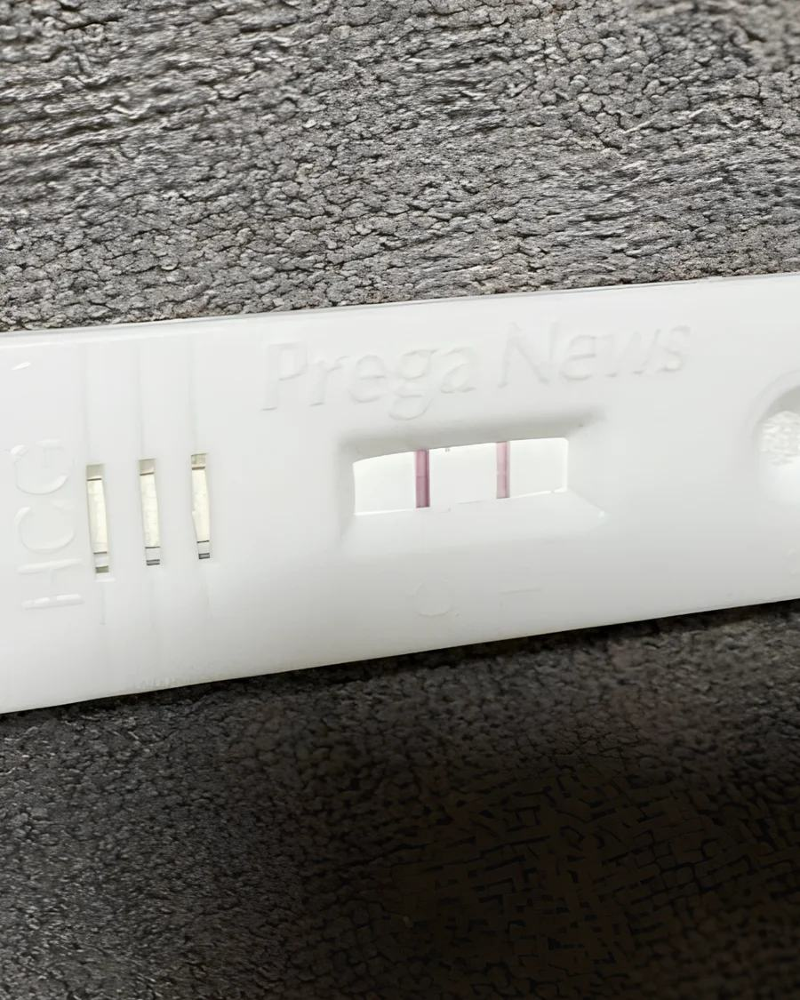
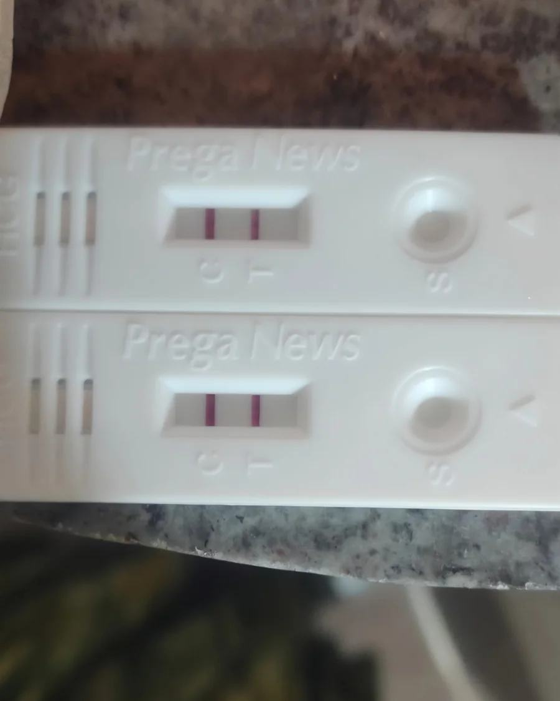
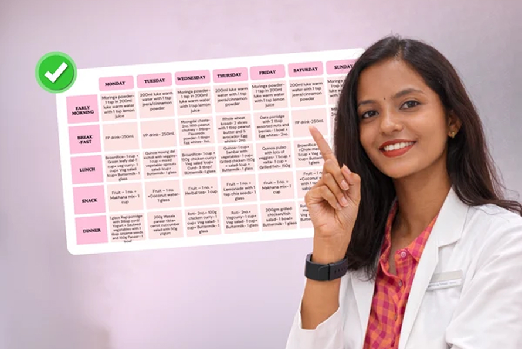
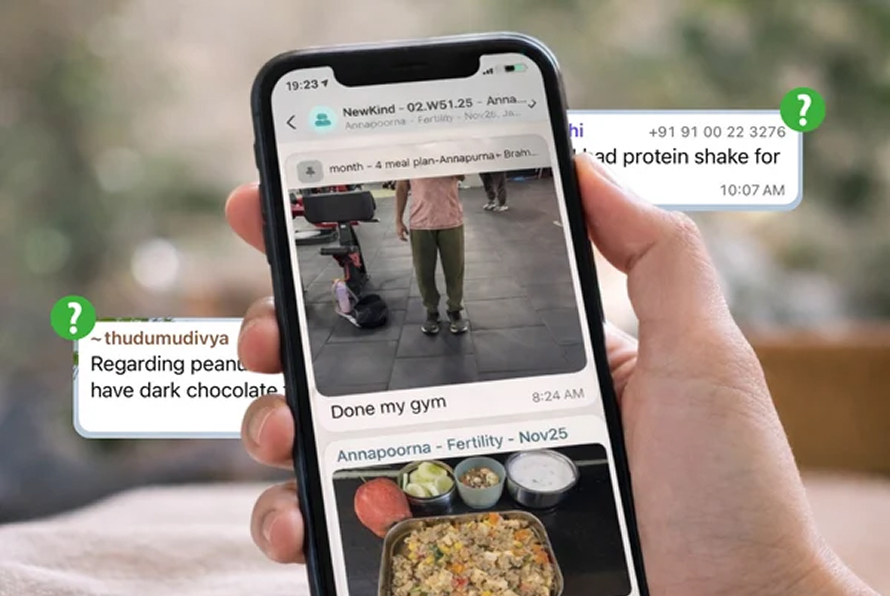

Conceived in 2 monthsUnexplained infertility · TTC 2 years
3 MONTHS OF SUPPORT
Most fertility challenges have a root cause — hormonal, nutritional, psychological or lifestyle. We identify your specific root cause and build a structured plan around it.
Add numbers
Women or couples
Add benefits
1:1 guided support
Whether you're trying to conceive, navigating a fertility diagnosis, exploring unexplained infertility, or preparing for your next fertility treatment, NewKind helps you make sense of the factors that may matter and understand your options.
Understand your health. Explore the factors that matter. Make informed decisions about what comes next.
Faces are blurred, and personal information is hidden to protect the privacy of our users.

Conceived in 2 monthsUnexplained infertility · TTC 2 years

Conceived in 90 daysFailed IVF cycle · 90-day reset

Conceived in 3 monthsLow sperm motility & morphology · TTC 4 years

Conceived in 4 monthsLow AMH 0.89 + 5 failed IUIs · TTC 6 years

Conceived in 5 weeksLow AMH 0.74 ng/mL + Thyroid + Tubal issue

Conceived in 3 monthsFailed IUI 2024 + Failed IVF 2025 · TTC 7 years
Every fertility situation is different. Understanding your individual circumstances is an important step towards making informed decisions about your care.
Build a steady foundation for conception with personalised nutrition, movement, sleep and cycle support.
Prepare your body and mind for treatment with a plan designed around your clinical timeline.
Support energy, recovery and daily wellbeing before and through your egg-freezing cycle.
A practical, whole-person program for more consistent rhythms, metabolic health and hormone wellbeing.
Fertility information can feel overwhelming, especially when you're trying to make sense of reports, diagnoses and conflicting advice.

Women’s Health Specialist

Medical Director

Reproductive Endocrinologist

Embryology Specialist
Fertility Specialist
Want to understand your concern better?
Everything you need, in one place to improve your fertility over 3 full months.
1-on-1 consult with a natural fertility-focused OBGYN. Assess your reports & history and start right medicines & supplements.

Monthly customised meal plans for you & your partner for all three months. Made according to your weight goals and fertility needs.
Daily LIVE couple yoga classes with a fertility instructor. Improve circulation to reproductive organs to better egg and sperm quality.
Weekend de-stress sessions with psychologists to calm your nervous system through meditations, breath work & more.
Sessions with an expert to improve connection, reduce performance stress, and support conception. So you can try every ovulation cycle.

A private WhatsApp group with our team for you and your partner. To hold you accountable, and answer your queries at any time.
Real WhatsApp messages from the couples we've worked with. Names and faces hidden.
Fertility experts, nutritionists, yoga therapists, counsellors and care coordinators — one team, assigned to you.
Medical Director
Reproductive Specialists
30+ Years of ExperienceReproductive Endocrinologist
Reproductive Specialists
12+ Years of ExperienceHead of Embryology
Embryologist
13+ Years of ExperienceWomen’s Health Specialist
Reproductive Specialists
18+ Years of ExperienceFertility Specialist
Reproductive Medicine
15+ Years of ExperienceNewKind Fertility is a personalised 90-day programme combining medical guidance, nutrition, yoga, stress management and ongoing support for individuals and couples navigating fertility concerns. It complements appropriate medical care rather than replacing fertility evaluation or treatment.
Depending on your needs and confirmed services, the programme may include personalised nutrition guidance, live yoga and meditation, stress-management support, doctor Q&A sessions, supplement guidance, report reviews and individualised lifestyle recommendations.
The programme may be suitable for individuals and couples trying to conceive, experiencing fertility concerns or seeking support alongside medical care. It considers the relevant reproductive health needs of both partners. A discovery call can help determine whether it is appropriate for you.
NewKind may provide lifestyle guidance and support alongside appropriate medical evaluation for concerns such as PCOS, low AMH and male reproductive factors. Individual circumstances vary, and improvements in fertility markers or pregnancy outcomes cannot be guaranteed.
Yes. NewKind is designed to complement appropriate fertility care, not replace IVF, IUI or other indicated treatments. Discuss additional recommendations with your treating fertility specialist, and do not delay recommended medical treatment.
Not necessarily. Existing reports and medical history can inform the initial discussion. Any additional testing depends on your circumstances and should be arranged through appropriate healthcare professionals.
Depending on the confirmed programme structure, support may include check-ins, report reviews, doctor Q&A sessions, nutrition guidance and scheduled yoga or stress-management sessions. The team can confirm the exact frequency and format before enrolment.
No. Fertility outcomes depend on many factors, including age, reproductive health, underlying conditions and medical treatment needs. NewKind provides structured support but cannot guarantee pregnancy within any particular timeframe.
Every fertility situation is different. Speak with our team to understand the programme and whether it may be appropriate for you.
Book a Discovery CallFertility can be complicated. Understanding your concerns, exploring the factors that may matter and knowing which questions to ask can help you make more informed decisions.
Let’s talk about where you are, what support you need and whether NewKind Fertility is the right fit for you.